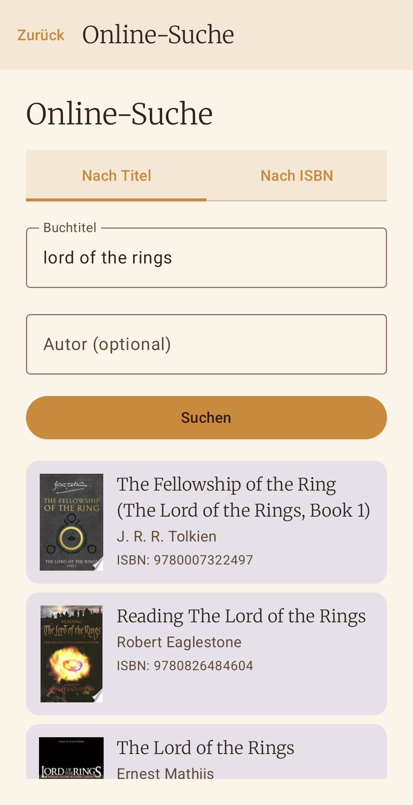
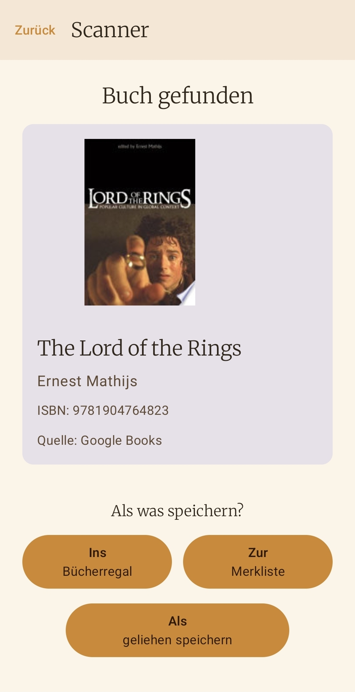
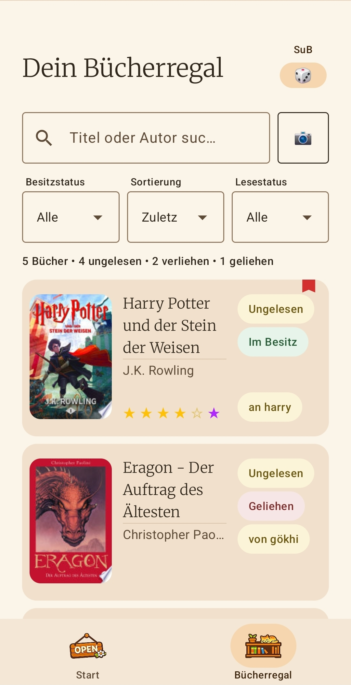
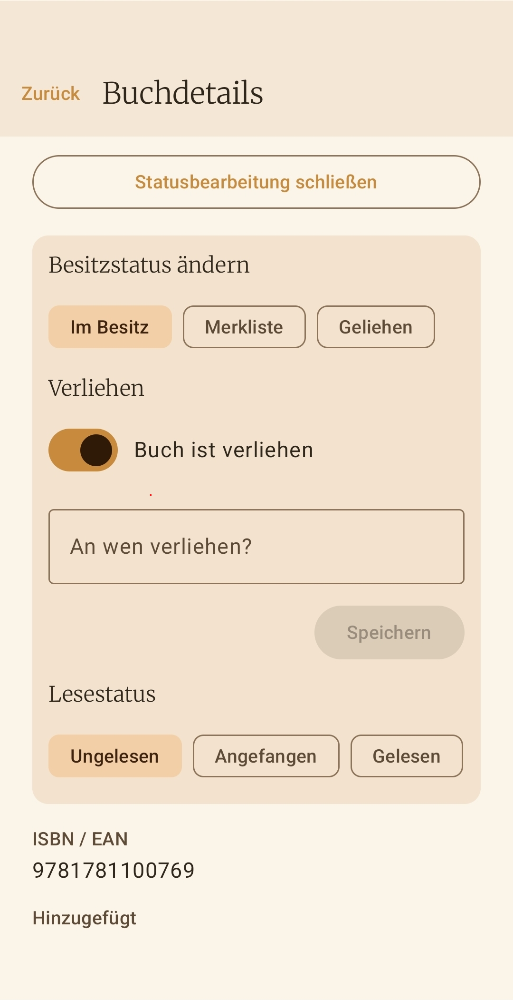
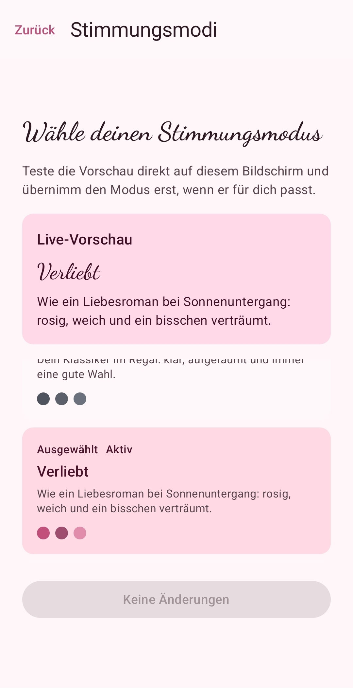

ISBN-Scanner
Buecher in Sekunden erfassen - inklusive intelligenter Lookup-Kette mit Cloud- und API-Fallback.
Cozy Reading Companion
Dein digitales Buecherregal: ruhig, klar und ohne Ablenkung.
Scanne ISBNs oder suche Buecher manuell online, verwalte Lesestatus, sortiere deine Sammlung und sichere alles lokal. Ohne Account-Zwang. Ohne Tracking. Ohne Abo-Falle.
Features
Buecher in Sekunden erfassen - inklusive intelligenter Lookup-Kette mit Cloud- und API-Fallback.
Metadaten aus externen Quellen laden, wenn kein Barcode verfuegbar ist.
ISBN, Titel, Autor und Cover direkt eintragen und spaeter bei Bedarf automatisch anreichern.
Ungelesen, Angefangen, Gelesen oder Abgebrochen - fuer Besitz und Merkliste getrennt pflegbar.
Trenne klare Sammlung von Wunschliste und behalte trotzdem alles in einer App.
Anonyme Buchmetadaten helfen, Treffer fuer die Community schneller bereitzustellen.
Waehle aus mehreren Stimmungsmodi den Look, der zu deiner aktuellen Leselaune passt.
Exportiere deine Bibliothek als JSON und stelle sie auf einem neuen Geraet kontrolliert wieder her.
Ablauf
Screenshots









Die App speichert persoenliche Bibliotheksdaten lokal auf deinem Geraet. Details zu Cloud-Cache, API-Abfragen und Rechten findest du in der separaten Bookielist-Datenschutzerklaerung.
Zur Datenschutzerklaerung